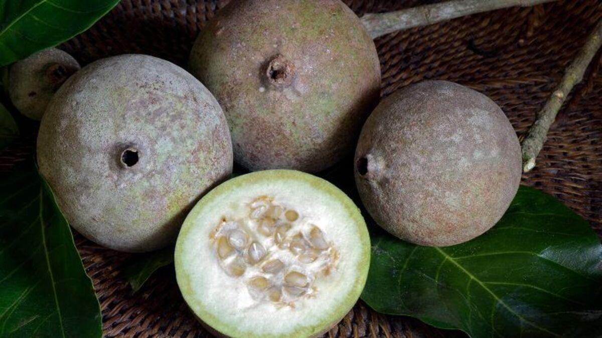
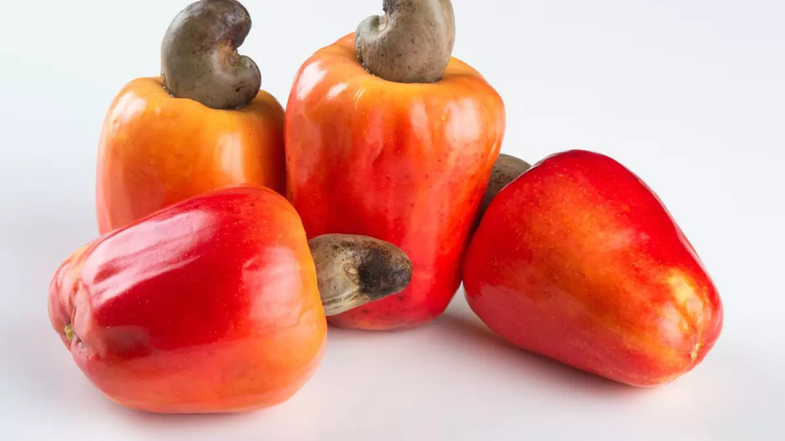
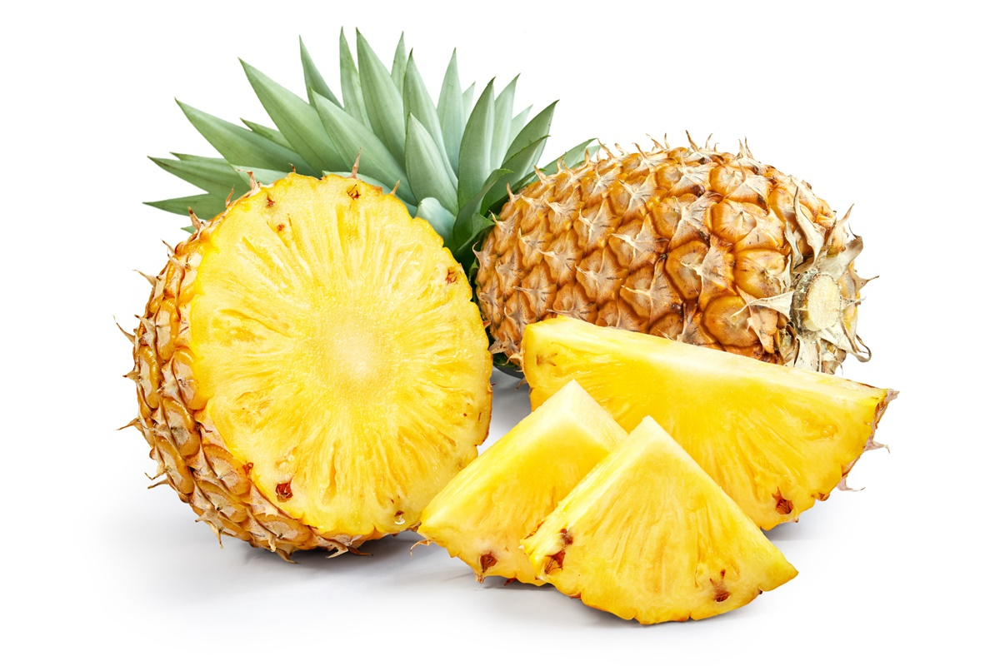
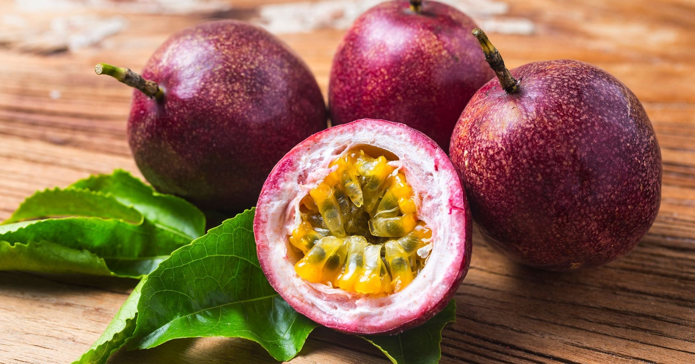
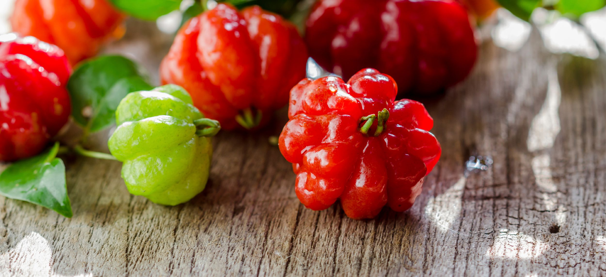

Sim, muitos países possuem frutas típicas apenas do seu país, assim como o Brasil, outros paises são ricos em
frutos.
Dentre todos os países, o Brasil lidera o ranking com mais de 300 espécies, seguido de Colômbia com 150 a 200 e
México com mais de 100 espécies.
Apesar de serem frutas tipicas de cada país, as mesmas são possíveis de se encontrar devido a importação.
| Classificação | Nome | Região | Ano da Descoberta | Foto |
|---|---|---|---|---|
| 1 | Jenipapo | Mata Atlântica, Amazônia e Cerrado | 1500 - Carta de P. V. Caminha |  |
| 2 | Caju | Litoral do Nordeste e Cerrado | 1500-1550 |  |
| 3 | Abacaxi | Centro, Cerrado e Amazônica | 1500-1550 |  |
| 4 | Maracujá | Todo brasil | 1500-1550 |  |
| 5 | Pitanga | Mata Atlântica | 1550 |  |